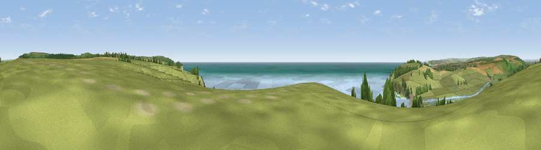

Viewpoint near Exceat
#2316 in England · top 11% of its area beats it · near ExceatWhere it is
The exact computed spot (TV 52475 97588). Click the marker for map links.
The view, rendered

A 360° render of this exact spot computed from the terrain model, tree cover and land cover — summer colours, afternoon light, calibrated against photographs of famous viewpoints. Real trees, hedges and buildings will differ in detail.
The panorama
Grey silhouette: terrain skyline in each direction (720 bearings, Earth curvature and refraction included). Dashed green: skyline with trees (+15 m) and buildings (+8 m) as obstacles. Blue strip: how far the ground is visible on each bearing.
Where the view opens
Wedge length = distance to the farthest visible ground on that bearing (vegetation-aware). Rings at 10, 25 and 50 km.
What fills the view
47% water · 38% grassland · 4% cropland · 4% woodland · 4% wetland · 2% bare ground ·
Angular shares of the visible panorama (visual magnitude), not map area. Landscape diversity 0.53 (0–1 Shannon).
Key numbers
More beautiful places nearby
The staircase of upgrades: each row has a higher view potential than everything closer. Driving times are estimates from straight-line distance, calibrated against real road routing — check an actual route before setting out.
| Place | Direction | Drive | Score |
|---|---|---|---|
| Viewpoint near Wilmington | NNE · 6 km | ~13 min | 84.9 |
| Wilmington Hill | NNE · 6 km | ~13 min | 85.4 |
| Viewpoint near Alciston | NNW · 9 km | ~17 min | 85.8 |
| Viewpoint near Alciston | NNW · 9 km | ~18 min | 86.8 |
| Firle Beacon | NNW · 9 km | ~18 min | 88.9 |
| Viewpoint near Niton | W · 105 km | ~129 min | 89.2 |
| Viewpoint near West Bexington | W · 197 km | ~216 min | 89.5 |
| The Knoll | W · 199 km | ~217 min | 91.0 |
50.75786, 0.16039 · source: screening · position refined by local search. Computed location — check access rights before visiting.